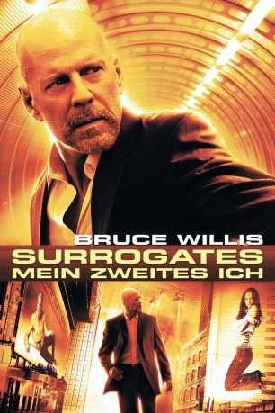
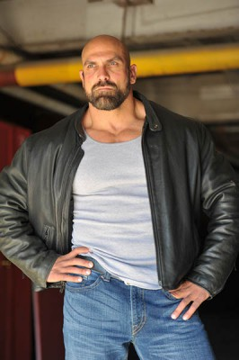
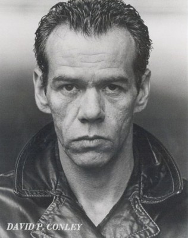

#173 Surrogates - Mein zweites Ich
Alternativ: Surrogates
 
 IMDB-Wertung: 6.3 / 10
IMDB-Wertung: 6.3 / 10  Metascore: 45
Metascore: 45 
2054: Die Menschen kommunizieren nur noch über ihre "Surrogates" - ferngesteuerte Roboterklone - miteinander, vollkommen isoliert und verlassen von der Außenwelt. Ein scheinbar perfekter Zustand, wäre da nicht eine mysteriöse Mordserie, die diese makellose Welt ins Wanken bringt. Dem Mörder auf der Spur, setzt FBI-Agent Tom Greer (Bruce Willis) in der wirklichen Welt sein Leben aufs Spiel, um das Rätsel zu lösen und die Morde zu stoppen. Dabei muss er auch gegen eine immer größer werdende Widerstandsbewegung ankämpfen. Wem kann er im Kampf Menschen gegen Technologie noch trauen?
Jahr: 2009
Dauer: 89 Minuten
FSK: 12
Land: USA Studio: Walt Disney Studios Motion PicturesTonspuren: DTS - ,
Untertitel:
Auflösung: 1080p (1920×800) Größe: 6492 MB
Genre: Action, Sci-Fi, Thriller
Regisseur:  Jonathan Mostow
Jonathan Mostow
Drehbuch: Michael Ferris, John Brancato, Robert Venditti, Brett Weldele
Soundtrack: Richard Marvin
Darsteller:
 Bruce Willis als Greer
Bruce Willis als Greer Radha Mitchell als Peters
Radha Mitchell als Peters Rosamund Pike als Maggie
Rosamund Pike als Maggie Boris Kodjoe als Stone
Boris Kodjoe als Stone- James Francis Ginty als Canter
 James Cromwell als Older Canter
James Cromwell als Older Canter Ving Rhames als The Prophet
Ving Rhames als The Prophet Jack Noseworthy als Strickland
Jack Noseworthy als Strickland Devin Ratray als Bobby
Devin Ratray als Bobby Michael Cudlitz als Colonel Brendon
Michael Cudlitz als Colonel Brendon- Jeffrey De Serrano als Armando
- Helena Mattsson als JJ the Blonde
- Michael Philip als Uniformed Cop
- Jennifer Alden als Landlady
- Andrew Haserlat als Undergrad #1
 Rachel Sterling als Assistant
Rachel Sterling als Assistant Meta Golding als Female Counsel
Meta Golding als Female Counsel- Taylor Cole als Female Lawyer
- Jordan Belfi als Victor Welch
- Nicholas Purcell als Pulaski / Commando
- Max Murphy als Captain
- Victor Webster als Lopez
 Valerie Azlynn als Bridget
Valerie Azlynn als Bridget- Chad Williams als Salesman
- Mike Randy als Hunk
-  Michael DeMello als Gate Guard
-  David Conley als Miller
 Bruce-Robert Serafin als Bud
Bruce-Robert Serafin als Bud- Cody Christian als Boy Canter
- Todd Cahoon als Brian
- Ella Thomas als Lisa
- Gabriel Olds als Agent #1
- Eamon Brooks als Agent #2
- Trevor Donovan als Surrie / Greer
- Rick Malambri als Clerk
- Christine Mascott als Big Woman
- Anya Monzikova als Beautiful Woman
- Stanis Krista Ames als Surrogate , uncredited
- Melissa Barker als Surrogate , uncredited
- Greg Berney als Surrogate , uncredited
- Nicole Burch als Surrogate , uncredited
 Chemi Che-Mponda als Dread , uncredited
Chemi Che-Mponda als Dread , uncredited- Shannon Mary Dixon als Surrogate , uncredited
 Sari Gagnon als Surrogate , uncredited
Sari Gagnon als Surrogate , uncredited- Barbara Guertin als Mourner - Dred , uncredited
 London Hall als Dread , uncredited
London Hall als Dread , uncredited- Haley Higgins als Surrogate , uncredited
 Kate Jurdi als Surrogate , uncredited
Kate Jurdi als Surrogate , uncredited- Petar Kirilov als Surrogate , uncredited
- David A. Kirsch als Dread , uncredited
Datei: X:\2009(N-Z)\Surrogates - Mein zweites Ich (2009, FSK12, 1920x800).mkv seit 14.02.2015
Festplatte: HD 2009(G-Z)-2010(A-F)
 Es gibt insgesamt 99 Filme in der Gruppe '2009(N-Z)'
Es gibt insgesamt 99 Filme in der Gruppe '2009(N-Z)'